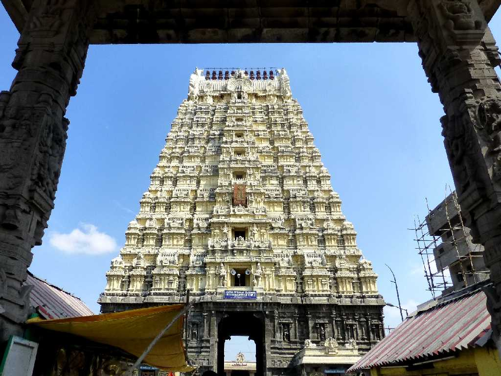
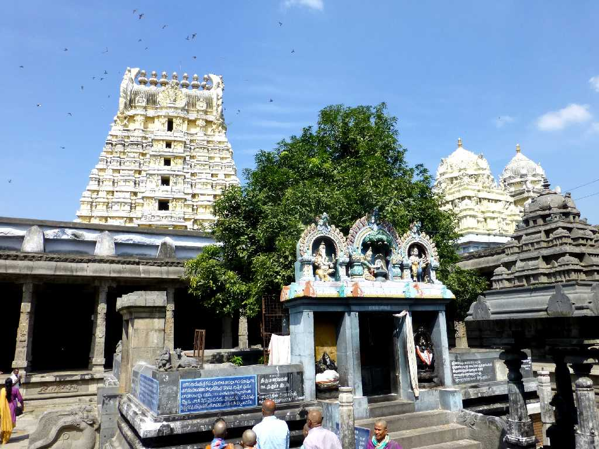
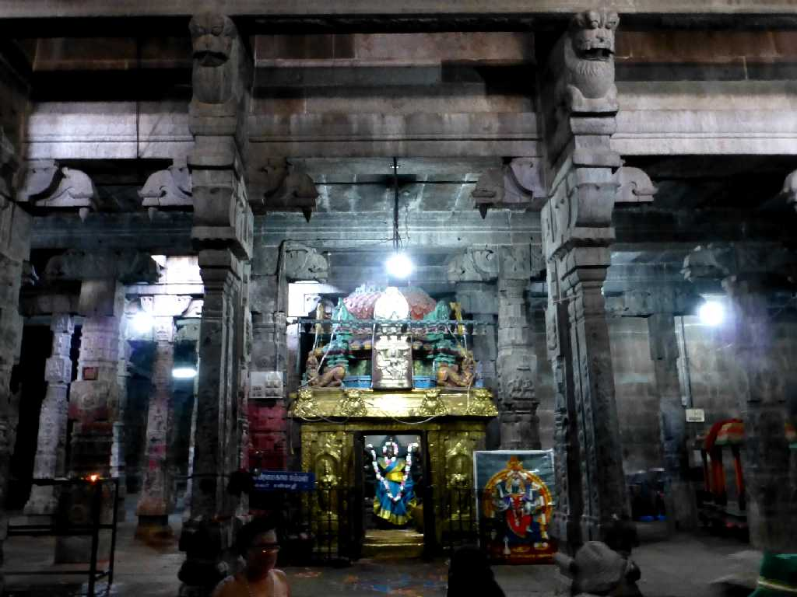
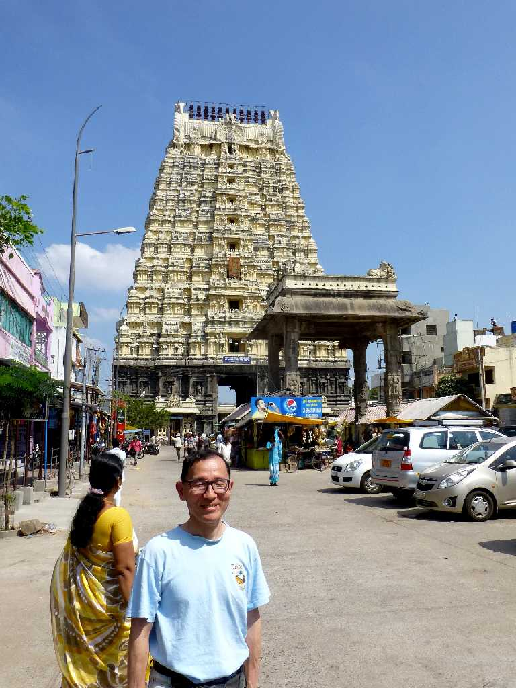

Gopuram Ekambareswarar Temple Kanchipuram
１５０９年に創られた南インド最大の高さ６０ｍ１１層からなる南塔門ゴープラムが美しいエーカンバレシュワラ寺院

Ekambareswarar Temple
女神パールヴァティーがシバ神の象徴である砂のリンガを創り修行した

Altar Ekambareswarar Temple

February 7 2015 Ekambareswarar Temple